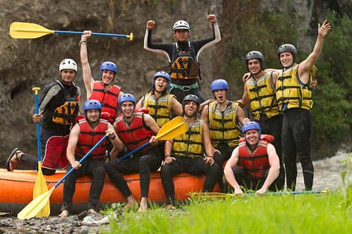
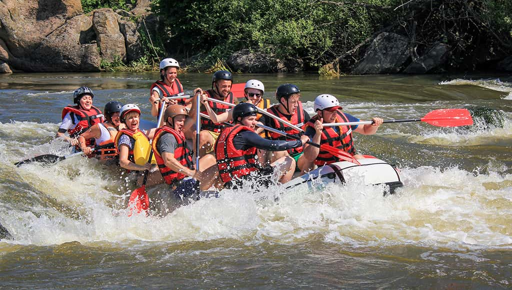

Company Purpose: To act as a catalyst for human connection and personal growth by immersing people in the raw, untamed power of the river, creating memories that flow long after the ride is over.


Company Purpose: To act as a catalyst for human connection and personal growth by immersing people in the raw, untamed power of the river, creating memories that flow long after the ride is over.
White Water Rafting Adventures was started in 1998 by a small group of river guides with one common passion, to introduce people to the thrill and beauty of white water. What started as a small operation with a few rafts and a hand-me-down van has grown into one of the most trusted adventure companies in the area, now offering adventures on several rivers and routes for everyone from the nervous first-timer to the adrenaline-seeking veteran.

White Water Rafting Adventures has been creating unforgettable rafting experiences for adventure seekers and outdoor lovers for over ten years. What started as a small passion for rivers has become a trusted rafting company known for exciting trips, experienced guides and a strong commitment to safety. Over the years we have welcomed thousands of guests, explored beautiful waterways and created lasting memories through exciting river adventures. Today, every rafting experience still combines adventure, safety, teamwork and respect for nature.